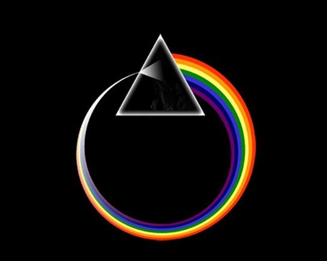

¿Alguna vez has sentido la necesidad de conectar contigo mismo y encontrar la calma en medio del caos? Los mantras, antiguas y poderosas herramientas de la espiritualidad, pueden guiarte en ese viaje hacia el bienestar interior y la armonía espiritual.
Un mantra es más que solo palabras; es una vibración sagrada que resuena en lo más profundo del ser. Originados en las milenarias tradiciones hindúes y budistas, los mantras han sido utilizados durante siglos para liberar el potencial humano y alcanzar estados elevados de conciencia.
¿Cómo explican las neurociencias el efecto de los mantras en el organismo?
Al repetir estas palabras sagradas, se activan ciertas áreas del cerebro que promueven la relajación y la claridad mental. Además, la vibración de cada mantra afecta directamente a nuestro sistema nervioso, generando una sensación de bienestar y reduciendo los niveles de estrés.
Al cantar o recitar un mantra, nuestras mentes se enfocan completamente en el sonido y las vibraciones, liberándonos de pensamientos negativos y obsesivos. Los mantras pueden penetrar en niveles sutiles de la conciencia y reprogramar nuestro cerebro haciendo posible la liberación de patrones negativos de comportamiento.
Pero el efecto de los mantras no se limita solo a la mente. Estas poderosas expresiones sonoras también pueden influir en nuestro entorno y en nuestras relaciones con los demás. Al vibrar en sintonía con las frecuencias universales, los mantras pueden abrirnos puertas a nuevas oportunidades y atraer energías positivas hacia nuestra vida. Los mantras son una maravillosa combinación de lo espiritual y lo científico, lo que los hace aún más fascinantes y poderosos.
El hecho de que el sonido sea una forma de energía con distintas longitudes de onda y vibraciones nos lleva a comprender cómo los mantras pueden tener un impacto directo en nuestro bienestar físico y mental. La idea de que ciertas longitudes de onda pueden curar mientras otras pueden romper una copa nos muestra la potencia y delicadeza del efecto de los mantras.
Desde Bini te proponemos incorporar los mantras en tu vida diaria y experimentar por vos mismx sus poderosos efectos para una autorrenovación.